Xyh Tamura
Interdisciplinary Artist, Singer-Songwriter, & Researcher
Experimental Pop & Songwriting
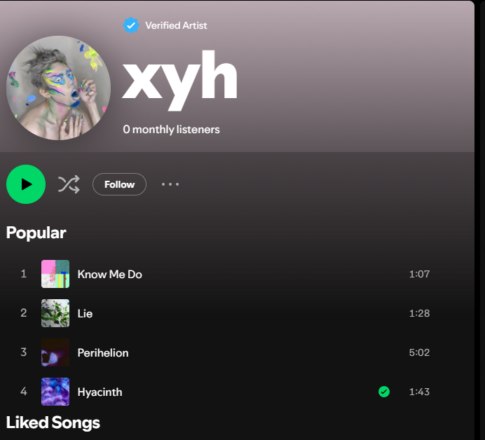

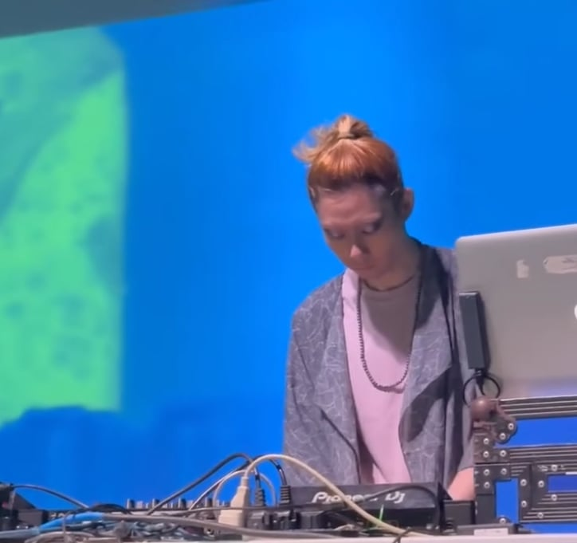
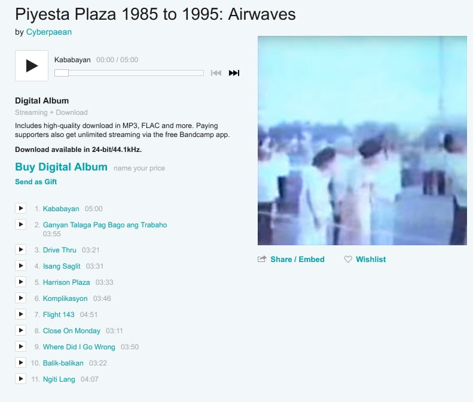
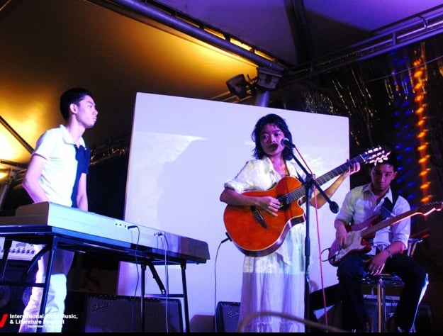
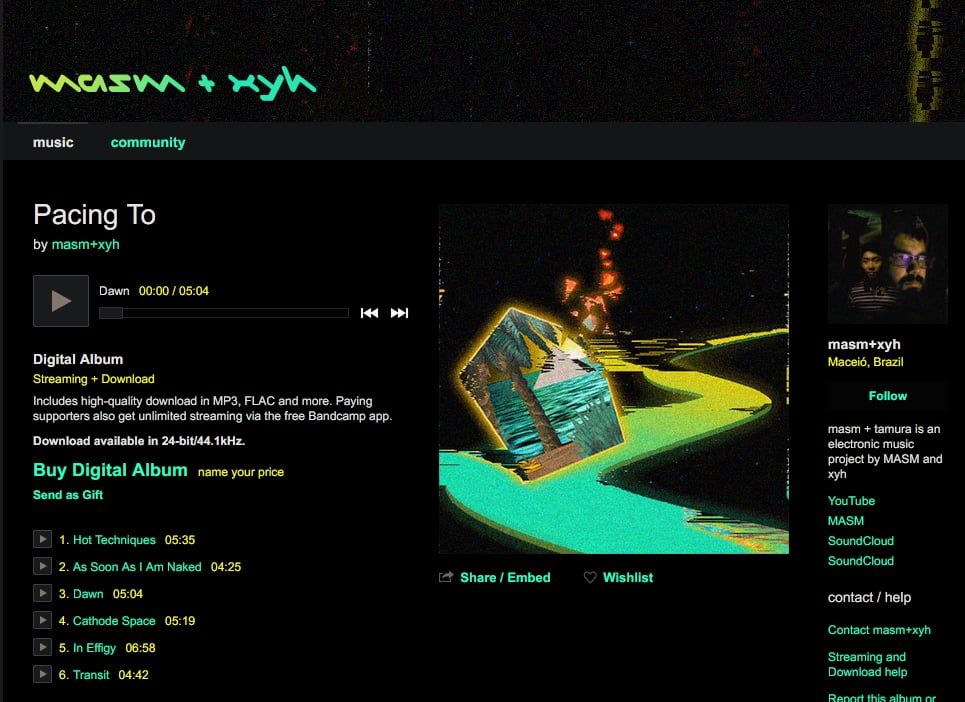
Composition & Audio Engineering
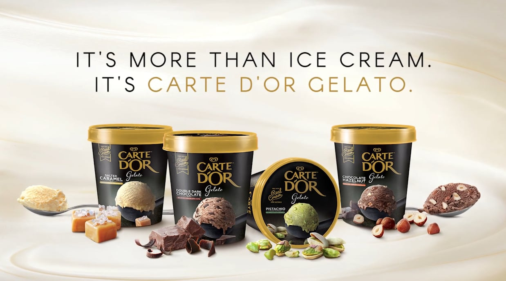
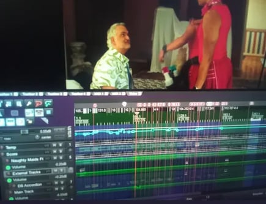
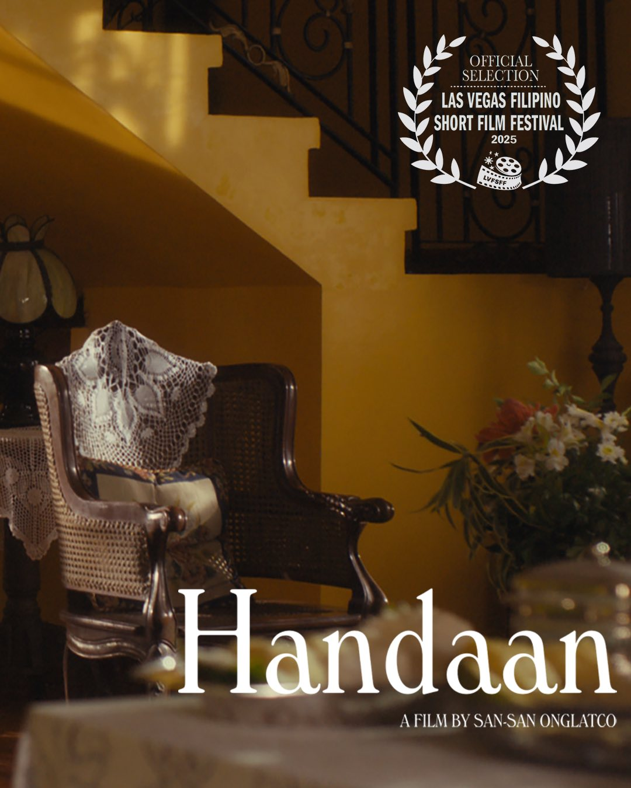
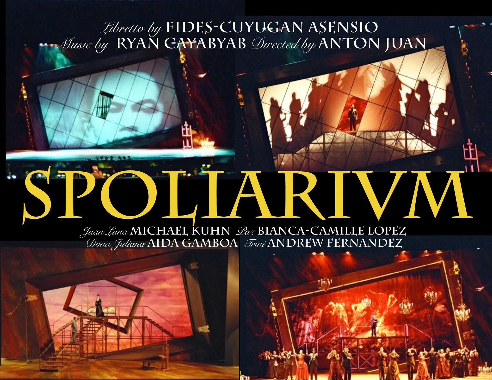
Electronic Literature & Videopoetry


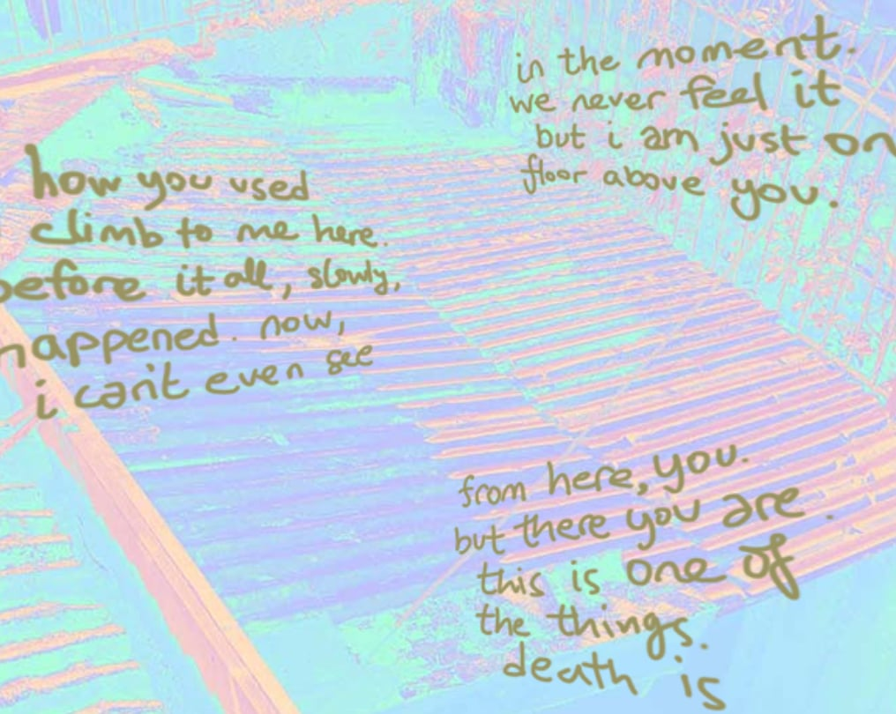
Visual & Intermedia Art


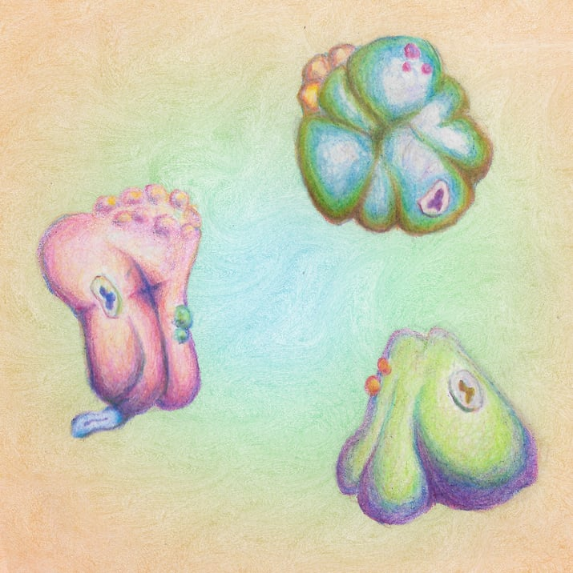
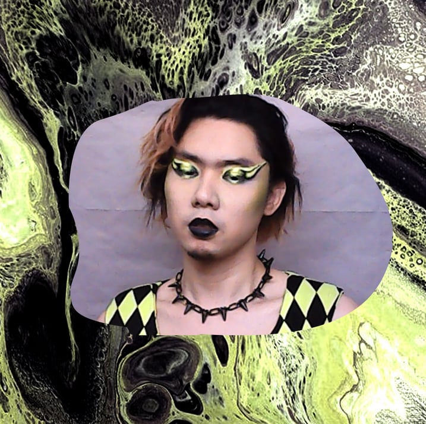
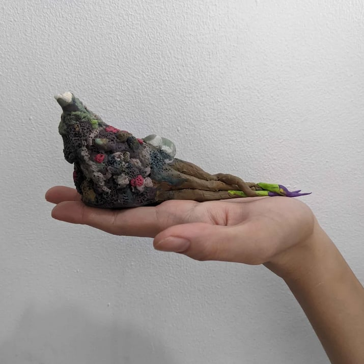
Creative Technology


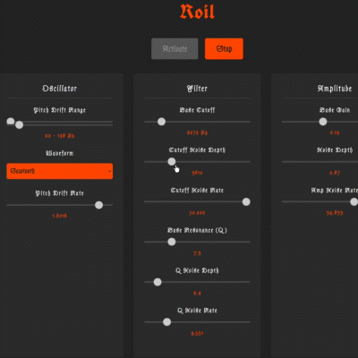
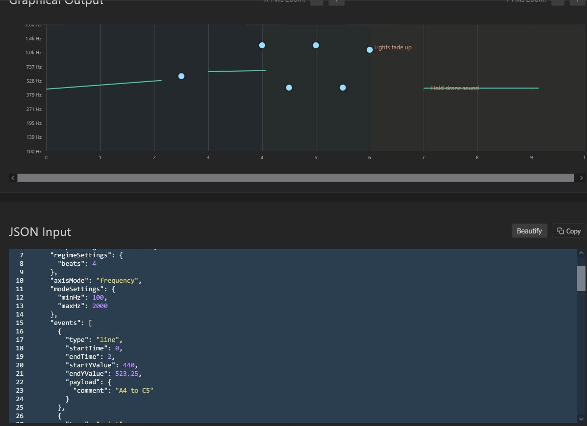
Research & Theory


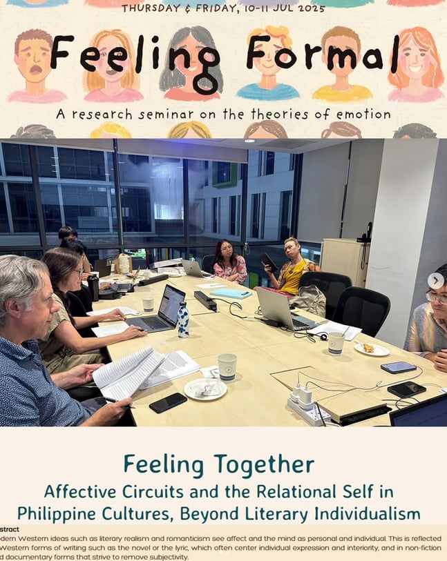